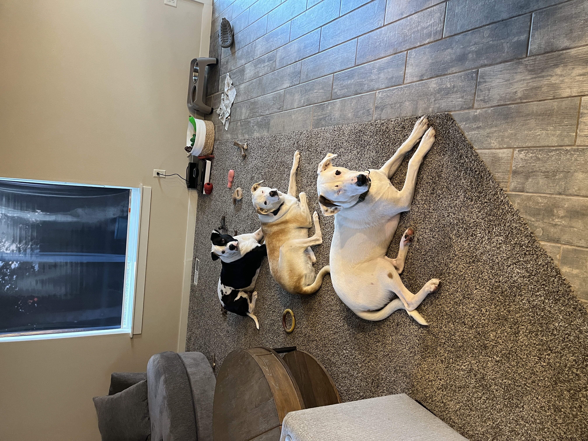

05:00
Welcome to MATH 2025!
Prof. Eric Friedlander
Welcome!
Meet Prof. Friedlander!
- Education and career journey
- Grew up outside New York City
- BS in Math & Statistics from Rice University (Houston, TX)
- Business Analyst at Capital One (Plano, TX)
- MS and PhD in Statistics & Operations Research from UNC-Chapel Hill
- Postdoc in Population Genetics at University of Chicago
- Assistant Professor of Math at St. Norbert College (Green Bay, WI)
- Work focuses on statistics education, queuing theory, and population genetics
- Big sports fan: NY Knicks, Giants, Rangers, Yankees, UNC Tarheels
- Dad of three cute dogs: Allie, Miriam, Tony
Meet Prof. Friedlander!

Tell me about yourself
Send me an email with answers to the following questions following questions:
- What would you like me to call you?
- Why are you taking this class?
- How are you feeling about taking this class? Be honest… you won’t hurt my feelings.
- How much experience with R, if any, do you have?
- Is there anything else you would like me to know about you? E.g. athlete, preferred pronouns, accommodations, etc…
- What are some song recommendations for the class playlist (nothing that will get me in trouble)?
Statistical modeling
What is a model?
- DATA = MODEL + ERROR
- DATA = PATTERN + DEPARTURES FROM PATTERN
- How do we identify the actual pattern?
- GOAL: Find a model for a relationship between a response/outcome/target variable \(Y\) and one (or more) explanatory/predictor variables (\(X_1,\ldots,X_k\))
- Models are a simplified but tractable version of reality
What are response and explanatory variables?
Geoge E. P. Box
- From Wikipedia: British statistician, who worked in the areas of quality control, time-series analysis, design of experiments, and Bayesian inference. He has been called “one of the great statistical minds of the 20th century”.
- “all models are wrong, but some are useful”
Why build a model?
- Making predictions
- Understanding relationships
- Assessing differences
What is regression analysis?
“In statistical modeling, regression analysis is a set of statistical processes for estimating the relationships among variables. It includes many techniques for modeling and analyzing several variables, when the focus is on the relationship between a dependent variable and one or more independent variables (or ‘predictors’). More specifically, regression analysis helps one understand how the typical value of the dependent variable (or ‘criterion variable’) changes when any one of the independent variables is varied, while the other independent variables are held fixed.”
Source: Wikipedia (previous definition)
Note: I don’t really like the terms “independent” and “dependent” variables
Examples of regression in practice
New Yorkers Will Pay $56 A Month To Trim A Minute Off Their Commute
How FiveThirtyEight’s 2020 Presidential Forecast Works — And What’s Different Because Of COVID-19
Effect of Forensic Evidence on Criminal Justice Case Processing
Why it’s so freaking hard to make a good COVID-19 model (from March 2020)
MATH 2025
Course FAQ
Q - What background is assumed for the course?
A - Introductory statistics or previous experience with mathematics at a level that would allow you to learn intro stats concepts relatively easily
Q - Will we be doing computing?
A - Yes. We will use the computing language R for analysis and Quarto for writing up results.
Q - Am I expected to have experience using any of these tools?
A - No. I do not expect you to have any exposure to R and certainly not Quarto.
Q - Will we learn the mathematical theory of regression?
A - Yes and No. The course is primarily focused on application; however, we will discuss some of the mathematics of simple linear regression.
Q - How much time should I be spending on this class?
A - This is a 4-credit class 75 minutes twice a week. That means that you should be spending approximately 9 hours per week working on this course (i.e. 6.5 hours outside of class)
Course learning objectives
By the end of the semester, you will be able to…
- analyze real-world data to answer questions about multivariable relationships.
- use R to fit and evaluate linear and logistic regression models.
- assess whether a proposed model is appropriate and describe its limitations.
- use Quarto to write reproducible reports.
- effectively communicate statistical results through writing and oral presentations.
Course overview
Course toolkit
- Course website: math2025fa25.netlify.app
- Central hub for the course!
- Tour of the website
- Canvas: cofi.instructure.com
- Gradebook
- Assignment submissions
- Announcements
Computing toolkit
All analyses using R, a statistical programming language
Write reproducible reports in Quarto
Access RStudio through College of Idaho posit Workbench
Use your College of Idaho email and password
- Sign into RStudio!
03:00
Activities + assessments
Prepare, Participate, Practice, Perform
Prepare: Introduce new content and prepare for lectures by completing the readings (and sometimes watching videos)
Participate: Attend and actively participate in lectures, office hours, team meetings
Practice: Practice applying statistical concepts and computing with application exercises during lecture, graded for completion
Perform: Put together what you’ve learned to analyze real-world data
Homework assignments (individual)
Two exams
Final group project
Grading
| Category | Percentage |
|---|---|
| Homework | 25% |
| Final Project | 25% |
| Exam 01 | 20% |
| Exam 02 | 20% |
| Application Exercises | 10% |
Note: You must receive at least a 60% on your two exams to pass the course.
See the syllabus for details on how the final letter grade will be calculated.
Support
- Attend office hours to meet with Prof. Friedlander (Boone 126B)
- Mon 3:30 - 4:30pm
- Tue 10:20 - 11:20am
- Thu 1:30 - 3:30pm
- Use email for questions regarding personal matters and/or grades
- See the Course Support page for more details
Course policies
Late Homework
- There will be a 5% deduction for each 24-hour period the assignment is late for the first two days. After 2 days, students will receive a 30% reduction. No homework will be accepted after it is returned to the class.
Late Application Exercises
AEs are due the class after they are assigned. No late work is accepted for application exercises, since these are designed as in-class activities to help you prepare for homework.
School-Sponsored Events
- If an application exercise, exam, or project must be missed due to a school-sponsored event, you must let me know at least a week ahead of time so that we can schedule a time for you to make up the work before you leave. If you must miss an exam or a project presentation due to illness, you must let me know before class that day so that we can schedule a time for you to take a make-up. Failure to adhere to this policy will result in a 35% penalty on the corresponding assignment.
Academic integrity
The College of Idaho maintains that academic honesty and integrity are essential values in the educational process. Operating under an Honor Code philosophy, the College expects conduct rooted in honesty, integrity, and understanding, allowing members of a diverse student body to live together and interact and learn from one another in ways that protect both personal freedom and community standards. Violations of academic honesty are addressed primarily by the instructor and may be referred to the Student Judicial Board.
By participating in this course, you are agreeing that all your work and conduct will be in accordance with the College of Idaho Honor Code.
Collaboration & sharing code
I have policies!
Let’s read about them in the Academic honesty section of the syllabus
Use of artificial intelligence (AI)
- Class discussion
- Break into groups of three and find a space on the board
- Discuss the following questions:
- How well do you understand what generative AI is and what it is doing?
- What skills do you think will be less important in the future due to AI?
- What skills do you think are enduring?
- What do you think the course policy should be around AI use?
Having a successful semester in MATH 2025
Five tips for success
Complete all the preparation work (readings and videos) before class.
Ask questions.
Start your work (homework and projects) early!
Don’t procrastinate and don’t let a day pass by with lingering questions.
Stay up-to-date on announcements on Canvas and sent via email.
What should I know about this class
This class is a lot of work
Steep learning curve in the beginning… stick with it! I promise you can do it!
More writing than you probably expected… it is not enough for Dr. F to know what you mean to say… you must say that! Dr F. always asks: “If this student said this in a job interview, would they get hired?”
In statistics, there is rarely one RIGHT answer… it’s all about extracting information from data to make arguments
Dr. F’s Biggest Pet Peeve
- Showing up late to class
Questions?
What questions do we have?